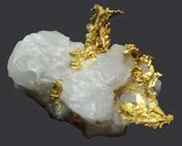

Gold
|  | Gold is a soft, very dense metal which is highly valued for use in jewelry and coinage. Called a "noble metal", it does not react readily in ordinary chemical reactions, so it can be found in essentially pure form as gold nuggets. It is also used in dental work because it can be precisely shaped and does not react chemically in the mouth. Its high electrical conductivity makes it valuable for tiny electrical contacts, and its very high reflectivity has led to use in thin films as a reflector. |
Gold is bright yellow by reflected light, but in thin films may be blue or green.
Gold is the most malleable and the most ductile of all metals. It can be hammered into sheets only 1/100,000 cm thick and drawn into wires 1/5000 cm in diameter.
Gold is often alloyed with copper, silver, palladium or other metals. The amount of gold in these alloys is described in carats. The carat value is the number of parts of gold in 24 parts of alloy, so that 24 carat gold is the pure metal. American coinage gold is 21.6 carat and British coinage is 22 carat.
White gold as used in jewelry is usually an alloy of gold and nickel.
Gold is found in the mineral nagyagite, a sulfide, along with lead, iron, antimony, and tellurium. Tellurium combines with gold to form krennerite and calaverite, both with the empirical formula AuTe2. These two minerals are said to be dimorphs of each other.
|
Index
Periodic Table
Chemistry concepts
Reference
Pauling
Ch. 28 |